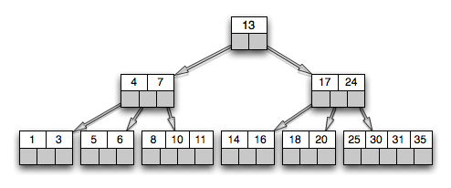

Database Scrap
Table of Contents
1 数据库的最简单实现
所有应用软件之中，数据库可能是最复杂的。但是，自己写一个最简单的数据库并不难。Reddit 上面的帖子 How do you build a database? 只用了几百个字，就把原理讲清楚了。
1.1 存储格式
第一步，就是将所要保存的数据，写入文本文件，即数据库。
为了方便读取，数据必须分成记录，每一条 记录的长度规定为等长 。比如，假定每条记录的长度是 800 字节，那么第 5 条记录的开始位置就在 3200 字节。但大多数时候不知道某一条记录在第几个位置，只知道主键（primary key）的值。这时为了读取数据，可以一条条比对记录。但是这样做效率太低，实际应用中， 数据库往往采用 B 树（B-tree）格式储存数据。
1.2 B 树
要理解 B 树，必须从二叉查找树（binary search tree）讲起。二叉查找树是一种查找效率非常高的数据结构，它有三个特点：
- 每个节点最多只有两个子树。
- 左子树所有节点的值都小于父节点，右子树所有节点的值都大于父节点。
- 在 n 个节点的查找树中找到目标值，一般只需要 log(n) 次比较。
二叉查找树的查找效率与层数相关，越处在下层的数据，就需要越多次比较。 极端情况下，n 个数据需要 n 次比较才能找到目标值。对于数据库来说，每进入一层，就要从硬盘读取一次数据，这非常致命，因为硬盘的读取时间远远大于数据处理时间， 数据库读取硬盘的次数越少越好。
B 树是对二叉查找树的改进。它的设计思想是， 将相关数据尽量集中在一起，以便一次读取多个数据，减少硬盘操作次数。 B 树也有三个特点：
- 一个节点可以容纳多个值。
- 除非数据已经填满，否则不会增加新的层。 也就是说，B 树追求 层数越少越好。
- 子节点的个数与父节点中值的个数，有严格的大小对应关系。一般来说，如果 父节点有 a 个值，那么就有 a+1 个子节点。

这种数据结构，非常有利于减少读取硬盘的次数。 假定一个节点可以容纳 100 个值，那么 3 层的 B 树可以容纳 100 万个数据，如果换成二叉查找树，则需要 20 层。 假定操作系统一次读取一个节点，并且根节点保留在内存中，那么 B 树在 100 万个数据中查找目标值，只需要读取两次硬盘。
1.3 索引
数据库以 B 树格式储存，只解决了按照「主键」查找数据的问题。如果想查找其他字段，就需要建立索引。
所谓 索引，就是以某个字段为关键字的 B 树文件。 假定有一张「雇员表」，包含了员工号（主键）和姓名两个字段。可以对姓名建立索引文件，该文件以 B 树格式对姓名进行储存，每个姓名后面是其在数据库中的位置（即第几条记录）。查找姓名的时候，先从索引中找到对应第几条记录，然后再从表格中读取。
这种索引查找方法，叫做 索引顺序存取方法 （Indexed Sequential Access Method，缩写为 ISAM）。它已经有多种实现（比如 C-ISAM 库和 D-ISAM 库），只要使用这些代码库，就能自己写一个最简单的数据库。
1.4 高级功能
部署了最基本的数据存取（包括索引）以后，还可以实现一些高级功能：
| SQL | 数据库通用操作语言，需要 SQL 解析器，将 SQL 命令解析为对应的 ISAM 操作。 |
|---|---|
数据库 join |
数据库的两张表通过「外键」建立连接关系，需要对这种操作进行优化。 |
| 事务（transaction） | 批量进行一系列数据库操作，只要有一步不成功，整个操作都不成功。 |
| 需要有一个「操作日志」，以便失败时对操作进行回滚。 | |
| 备份机制 | 保存数据库的副本。 |
| 远程操作 | 使用户可以在不同的机器上，通过 TCP/IP 协议操作数据库。 |
2 NoSQL and RDBMS
The aggressive tone of the term "NoSQL" is one of the reasons that a lot of people have an instant resentment to the technology. It encourages flame ignited posts which will get every developer who has ever touched an RDBMS to weigh-in and pass judgement on technology that theyĄŻve never used before in a combined post also declaring their eternal love for their preferred RDBMS of choice.
The negative posts generally share the same tone:
I have developed with RDBMS for 10 years and I've never needed to use a NoSQL database. RDBMS can scale just as good as NoSQL.
Unfortunately statements like the above instantly illustrate the developer has a biased attachment to a technology they've used all their life whilst at the same time declare they have absolutely no knowledge (or desire to gain any knowledge) on the subject for which they are passing judgement. It's most likely these developers have also made message queues fit in databases and marvelled at their configuration-mapping ability to have an eagerly-loaded chain of nested objects auto-magically bind to their pristine domain model. Yes this is quite a feat to be proud of, unfortunately it also happens to be a one-liner in a lot of non-relational databases. This characteristic of being able to serialize your domain model without requiring it to be mapped to a database using an ORM is not a feature limited to NoSQL databases, other data persistence solutions like db4o (an object orientated database) achieve this equally as well.
RDBMSs are really good at doing what they do, which is storing flat, relational, tabular data. They still remain the best solution for storing relational data. Using a NoSQL data store isn't an all-or-nothing technology. It actually serves as a good complementary technology to have along-side an RDBMS. Even though they have overlapping feature-set they can still be great together. It's still all about picking the right tool and using the right technology for the task at hand.
What NoSQL databases are naturally good at:
- Performance
- As everything is retrieved by key, effectively all your queries hits an index. Redis, an in-memory data-store (with optional async persistence) can achieve 110000 SETs/second, 81000 GETs/second in an entry level Linux box, and no this is not possible with any RDBMS.
- Replication
- A feature common in most NoSQL data stores is effortless replication. In Redis this is achieved by un-commenting one line:
slaveof ipaddress portinredis.conf - Schema-less persistence
- As there is no formal data structure to bind to and most values are stored as binary or strings, the serialization format is left up to you. Effectively this can be seen as a feature as it leaves you free to serialize object directly. A lot of client libraries opt for a simplistic language-neutral format like JSON.
- Scalability
- This seems to be a heated topic (where everyone believes they can scale their technology of choice equally as well given the right setup) so I won't delve in to this too deeply only to say that key-value data-stores by their nature have good characteristics to scale. When everything is accessed by key, clients can easily predict the source of data given a pool of available data-stores. Most clients also come in-built with consistent hashing where the addition or removal of a data store does not significantly impact this predictability.
- Efficiency and Cost
- As there are a plethora of options available, most NoSQL data stores are both free and open source. They also perform better and provide better utilization of server resources than comparative RDBMS solutions.
- Advanced data constructs
- NoSQL variants like Redis, in addition to a key-value data store also provide rich data constructs and atomic operations on server-side lists, sets, sorted sets and hashes which make things like message-queuing, notification systems, load-balancing work tasks trivial to implement.